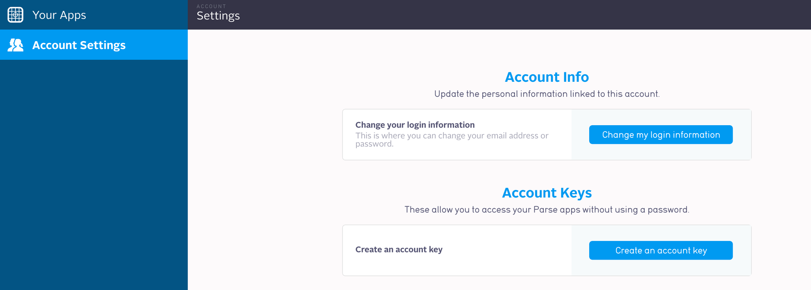
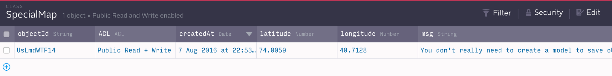
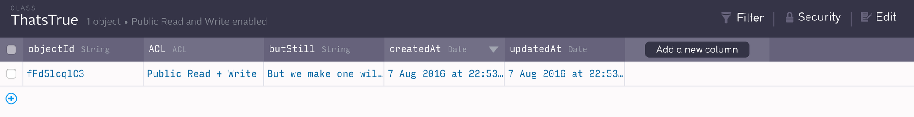

Today we will be using a database at Parse.com to create and save markers for the map.
Parse.com is a Mobile Backend as a Service provider. It "provides back-end tools for mobile developers that help mobile developers store data in the cloud, manage identity log-ins, handle push notifications and run custom code in the cloud." (Wikipedia)
When developers store objects on Parse.com, Parse uses databases like MongoDb and RocksDb, but the developer would never know it: the Parse interface uses its own system. For example, say we wanted to create an object called "person" that had the values name, age, and isLiving. It would look something like this:
ParseObject person = new ParseObject("Person");
person.put("name", "Kevin Smith");
person.put("age", 46);
person.put("isLiving", true);
person.saveInBackground();
That's a very relaxe database query!
In the next section we're going to be creating a model class in our android project for the "SpecialMap" object that we will be using in this project, but make no mistake-- there is no need to declare what fields a Parse.com object can contain in advanced. You can make up new objects and new fields for your objects whenever you want, as long as you haven't already registered a ParseObject with that name in your application (more on that later).
For now, let's prepare our Android Studio project to use Parse.com.
You can either download the pre-configured starter project from parse, or configure your own project by doing the following:
1)
Add these two lines to your build.gradle file in 'dependancies'
(the build.gradle file that says Module: App next to it,
not the one that says 'Project:
compile 'com.parse.bolts:bolts-android:1.+'
compile 'com.parse:parse-android:1.+'
2) Add these permissions to AndroidManifest.xml:
3) Create an account at Parse.com. After you create an account, go to your Dashboard.
At your dashboard, click "Account Settings" and "Create Account Key."
4) In Android Studio, click file--> new --> Java class and call it "ParseApplication.java" In ParseApplication.java, paste in this code:
package <yourPackageName>;
import android.app.Application;
import com.parse.Parse;
public class ParseApplication extends Application {
@Override
public void onCreate() {
super.onCreate();
Parse.enableLocalDatastore(this);
Parse.initialize(this, "my_app_id", "my_client_key");
}
}
Replace "my_app_id" and "my_account_key" with the app_id and account_key you see generated at your Parse.com dashboard.
Before we do anything else, let's just do a simple test to make sure that our database is working.
In the onCreate() method in your MainActivity.java class, add the following lines:
ParseObject specialMap = new ParseObject("SpecialMap");
specialMap.put("latitude", 74.0059);
specialMap.put("longitude", 40.7128);
specialMap.put("msg", "You don't really need to create a model to save objects in Parse. ");
specialMap.saveInBackground();
ParseObject madeUpObject = new ParseObject("ThatsTrue");
madeUpObject.put("butStill", "But we make one will later, because you have to admit it keeps things organized.");
madeUpObject.saveInBackground();
Run the project.
If you look in your database now, you should see the following two classes:
 Now, please erase all of the code that you just added to MainActivity, because what we are about to do will in the next section will cause our app to crash if that code is left in.
Toggle Menu